Doom
You can access Doom missions by going to the Select Mode Map and clicking the ominious swirling whirlpool at the top right. 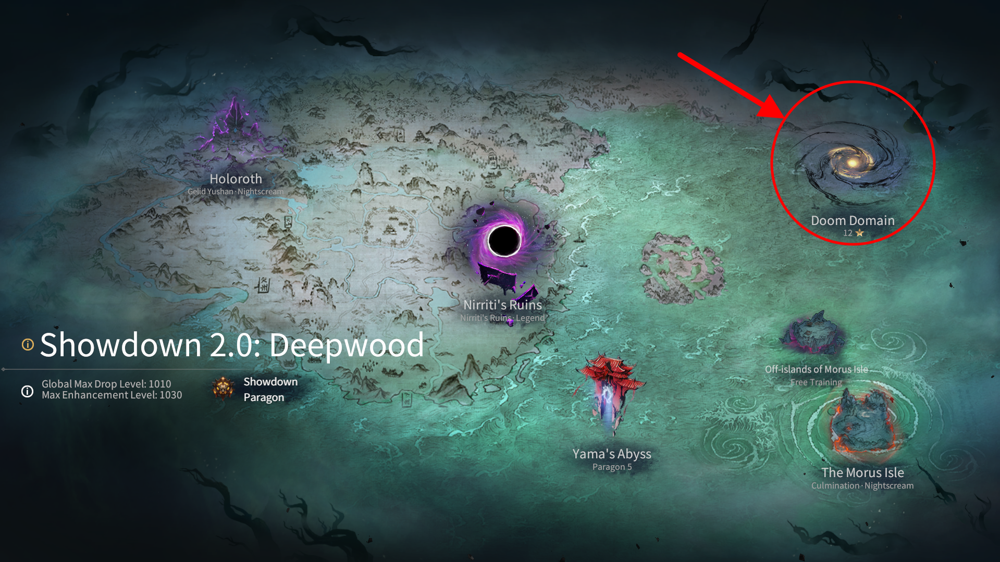
Doom consists of 3 missions with static Omens and 3 special objectives that grant you a star for completing each one. These objectives are made up of the following:
- Complete the Stage Successfully.
- Complete the Stage Successfully within a Time Limit.
- Complete the Stage Successfully with 1 of 4 Heroes.
Due to the overlap of the special objectives, it is possible to get 3 stars from a single run. However, it is not required to complete every single one of them in one run to get all 3. They only have to be completed once per week. You can view the specifics when choosing a mission under Doom Domain. 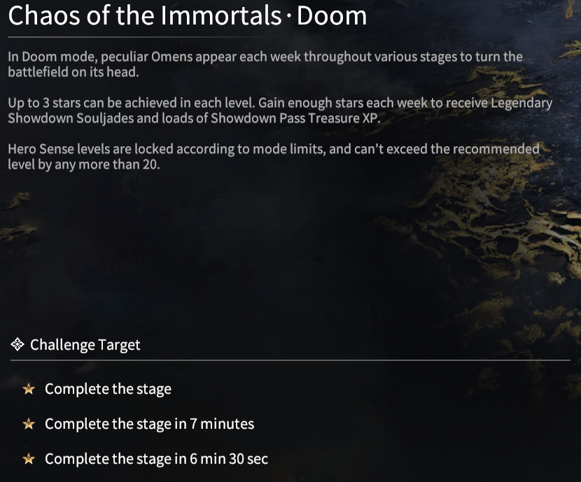
For every 3 stars gained, you get a reward of 2 Epic or Legendary Souljades and 800, 900 or 1000 Showdown Pass XP for 3, 6 and 9 stars. 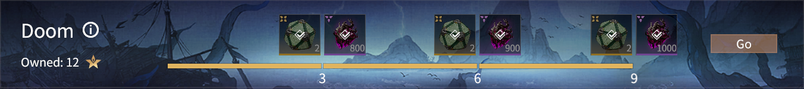
Speedrun
You can access Speedrun by going to the Select Mode Map and clicking the ominious swirling whirlpool at the top right. Speedrun is similar to Doom in that you can acquire 3 stars as well and it has static Omens. However, the selection of Omens it has are unique to the mode, often with them changing the way you have to play that mission. Furthermore, the enemies are along the highest levels of Sense, so they hit much harder and have more health.
Rank Titles
The main goal of Speedrun is to not only clear it, but to clear it as fast as possible to get a good rank on the leaderboards. If you rank among the top 500, you will gain a title corresponding to it and a Legendary Souljade. You can only get one Legendary Souljade from this regardless of the number of servers you have accomplished this in.
The rank specific titles are as follows:
- Ranks 1 - 10: Golden Title
- Ranks 11 - 100: Silver Title
- Ranks 101 - 500: Green Title
Enigma Domain
Enigma Domain is a mission type in Morus Isle, that costs 30 fatigue per run and a 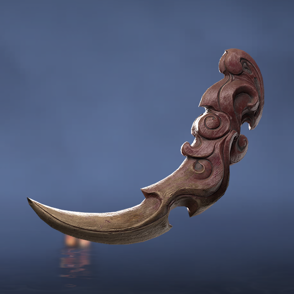 Rune Key. If you use a 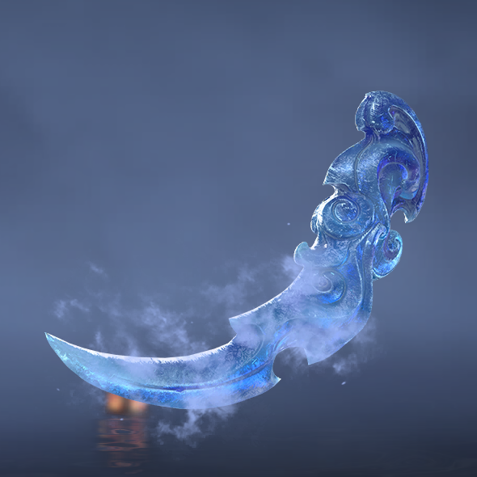 Legendary Rune Key to enter, it'll boost the Luck for your whole team, resulting in slightly better drops. It currently has two maps for it, the newest one being the area for chapter 2 and the old one from chapter 1.
Enigma Topaz
General Strategy (for Group Play)
- Your team should have a designated Jungler, while the other two are Bossers.
- Kurumi is recommended to be one of the Bossers as she can provide nice buffs and healing to her partner.
- Your Jungler's role is to get the enhance percentage to as close to 74% as they can (50% at the minimum).
- Doing so will make it so when the boss is killed, the next boss spawn will have a high chance to be placed at the same location.
- The boss spawn is determined when the enhance percentage reaches 75%.
- Try to keep an eye on how much % you gain from killing certain enemy types and opening Stronghold chests.
- There will be 9 bosses total of increasing Sense Levels until they reach 700.
- When the Sense Level reaches 700, try to fight the bosses that spawn as 3 people instead of two to clear it efficiently.
- Save the Demon Elixirs the bosses drop until the later ones so you can kill them faster.
- The Jungler on the other hand should aim to pick up as many buffs as they can from the Strongholds.
General Strategy (for Solo Play)
Clear mobs until boss spawns and reach enhance bar 66-74% then proceed to kill 3 bosses in a row then repeat. Doing this strat should guarantee that the boss spawn does not move at all, allowing you to get some insane clear speeds.
Enigma Peak
General Strategy
- Similar to Topaz, you should have a Jungler and two Bossers.
- Kurumi is heavily recommended alongside Viper or Temulch for Bossers.
- Your Jungler's role is to get the enhance percentage to as close to 67% as they can (42% at the minimum).
- The boss spawn is still determined when the enhance percentage reaches 75%, however, bosses give +33% instead of +25% in Enigma Peak.
- Eerie Bosses can begin spawning at Enhance 5 and up. I recommened fighting them as a team of 3 at this point.
- Eerie Bosses have new movesets, deal much more damage and have more health than normal.
- Make sure to manage the Demon Elixirs dropped by bosses well as you'll have to squeeze every bit of damage you can.
- To fully clear it, your build should be close to if not fully complete, including your Attributes being the way you want them.
Rewards
- For beating the 1st boss.
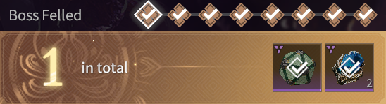
1 Epic Souljade Choice Gift + 1 Quench Crystal
- For beating the 2nd boss.
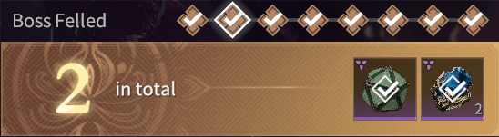
1 Epic Souljade Choice Gift + 1 Quench Crystal
- For beating the 3rd boss.
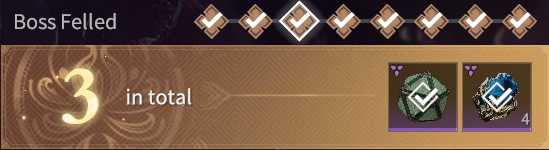
1 Epic Souljade Choice Gift + 2 Quench Crystals
- For beating the 4th boss.
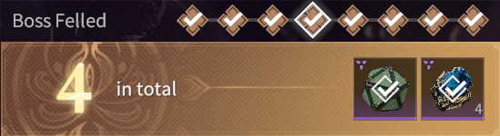
1 Epic Souljade Choice Gift + 2 Quench Crystals
- For beating the 5th boss.
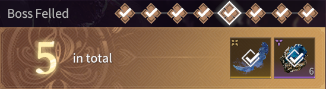
1 Legendary Rune Key + 3 Quench Crystals
- For beating the 6th boss.
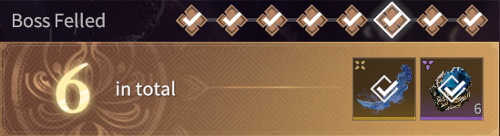
1 Legendary Rune Key + 3 Quench Crystals
- For beating the 7th boss.
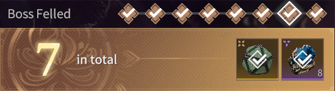
1 Legendary Souljade Choice Gift + 4 Quench Crystals
- For completing Enigma Peak.
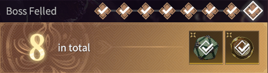
1 Legendary Souljade Choice Gift + Hero Seal
Yama's Abyss
Yama's Abyss is a roguelike mission type that consists zones. The number of zones depends on the type of Stage that you enter, with Main Stages having 15 and Void Space Stages having 30. Clearing enough Showdown stages will increase your rank up to Showdown Paragon when clearing Main Stage 40.
What Affects Yama's Abyss
With Yama's Abyss being a roguelike, your progression is reset with every run. However, there are things you can equip outside of it to make it easier and influence the RNG in your favor:
- Your Sense Level
- The Base Attribute bonus still applies (+1 Attack, +10 Health/Armor per 10 Sense Levels).
- Your Equipped Souljades
- Souljades you have equipped have a greater chance of appearing in the shop zones.
- Attributes on your Souljades
- Attributes taken from your Souljades will appear in green and have a higher chance of appearing.
- Your Potential Tree
- Your entire Potential Tree is active.
Anima Rings & Collections
Yama's Abyss introduces new items known as Anima Rings that increase your power temporarily. Each Anima Ring belongs to a Collection and you get a bonus for the number of them that you've acquired at least once before. Each Collection generally contains Anima Rings that synergize with each other, with The Awakening Collection having Rings around Thunderbolts. For maxing out your Collections it is recommended that you go into Void Space.
Favored Collections
In the current state of Yama's Abyss some Anima Ring Collections have proven to be significantly more effective than others. With the utmost effective for dealing damage being the Anima Rings under the Element Collection. This is because each of the Rings multiply on top of each other, giving you absolutely insane damage if you're lucky enough to acquire all 7 of them. However, there is also the Currency Collection, specifically Special Offer and Showdown Smuggler. Special Offer grants a 35% discount to the shop, making your money ~54% more effective! Showdown Smuggler on the other hand spawns a shop with a 20% discount, however, you can spawn this shop in a boss room to get your refresh on your Souljades early! Both of these Anima Rings play a key role and getting enough Anima Rings to be able to clear the later Main Stages fast enough to not time out.
Secret Anima Ring
There exists a secret Anima Ring when you acquire the Lost curse and are sent into the "Lost" zone. There will be two bosses, Fiery Monster and Mountain Ghost. I recommend beating the Fiery Monster first and then lure the Mountain Ghost into the corner that sticks out inconspicuously. Then you want the boss to hit the back wall of that corner until it breaks and there will be a green item on the ground. Picking that up will grant your entire team the Secret Anima Ring, Divine Army from the Sky. For a visual guide, check out this video:
Main Stages
There are a total of 50 Main Stages. Starting after Stage 25, there will be static Omens applied that change the way you have to play through them to clear it. Furthermore, before Stage 25, you are able to use multiple of the same heroes, but you can't do that after this point. Beware of Omens such as Enhanced Blade Edge and Enhanced Element. They only slightly buff their corresponding damage type, but severely nerf the oppositional one. For example, Enhanced Element II buffs Element Damage by only 12%, but nerfs Melee Damage by as much as 60%! When you have Enhanced Blade Edge, it nerfs Element damage severely in place of a slight increase in Melee Damage. Therefore, it is recommended to seek out Anima Rings in the Awakening Collection instead when that Omen is present. Due to this, it can lead to some Stages being significantly harder or easier than other ones.
Later Stages
Around Stage 35, clearing Yama's Abyss becomes more influenced by how lucky you are rather than your skill level. So don't feel too bad about it if you're unable to clear it within the first few tries. A strategy that many use in the later stages is to run it as a Trio and feed all of their money to whoever is lucky enough to get the right Anima Rings and Souljade combinations. Successive Ice Blast or Thunderpull + Thunder Counter are heavily recommended to clear these later stages as they provide a significant boost to element damage. If seeking a Thunderbolt based build in place of Element, then Souljades like Stormstride, Stormstride Sword and Thunder Sword are handy.
Void Space
There are three Void Space Stages: Level 25, Level 30 and Level 35. It is believed that you receive more currency in the higher level stages, but I personally recommend just running Level 25 for the ease. Void Space Stages are great for completing Anima Ring Collections due to the sheer amount given to you and how many you are able to buy by the end of a run. These Stages are good in particular for testing out certain builds, burning through your fatigue, leveling your Sense, or just having fun with the Anima Ring system.
Leaderboard
The Leaderboard is split into 3 sections: Yama's Abyss - Trios,
Yama's Abyss - Solos, Speedrun, & Speedrun • Last Week
Each section has a sub-section by the hero that was used.
For the Yama's Abyss sections, the order of the ranks is determined by first the stage cleared.
Then it goes to who cleared the stage in the least amount of time taken.
If two or more players are found to have the same time taken and stage cleared, then it is placed in the order
of who was on the leaderboard first.
For the Speedrun sections, it is first determined by the time taken, with faster times ranking higher.
Then if two or more players have the same time taken, then they are ordered by who was up there first.
You are awarded a Title depending on your rank and the section of that rank.
The titles are colored as follows:
- Top 10: Golden Title
- Ranks 11 - 100: Silver Title
- Ranks 101 - 500: Green Title
Titles from Speedrun have this appearance: 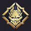
Titles from Yama's Abyss have this appearance: 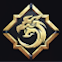